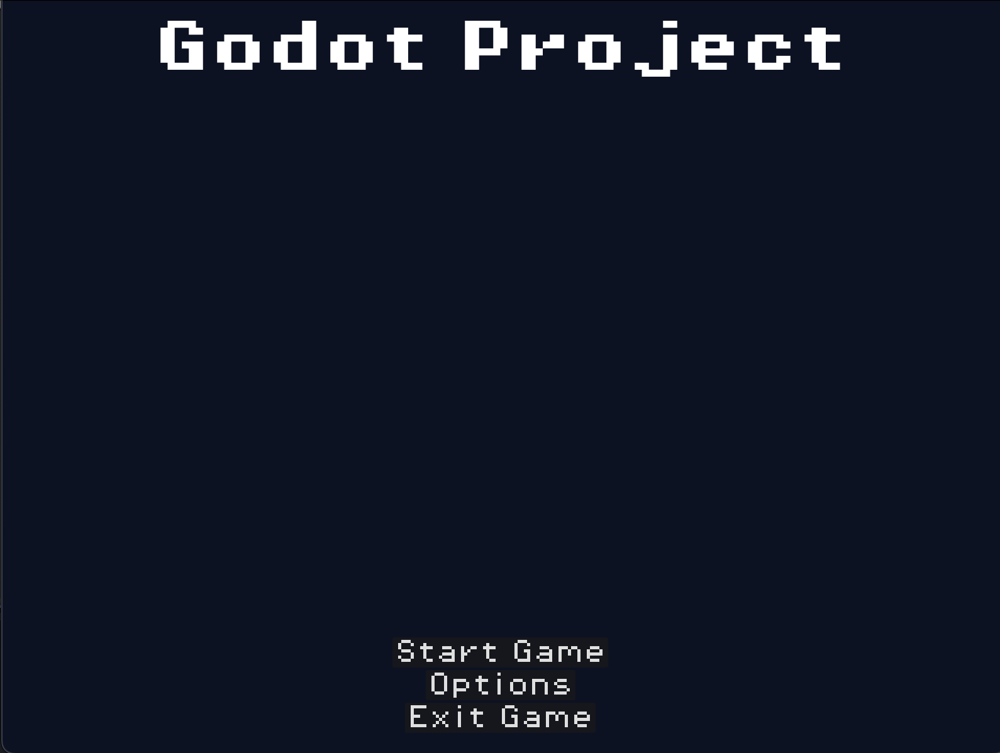
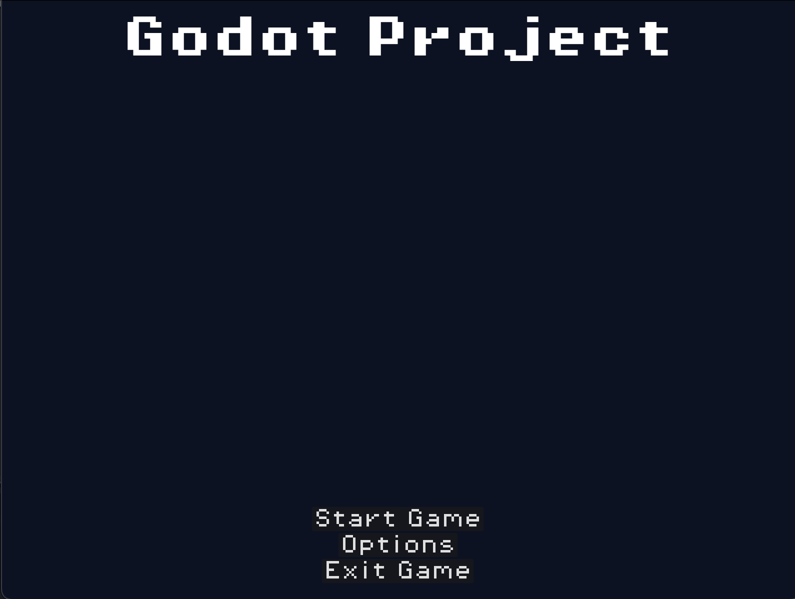

For my Undergraduate dissertation, I looked into using video games for physical rehabiliation purposes. This could include for example, patients recoving from surgery or those with life long conditions. The aim of this disseration was to create a video game that would assist with improving a patients fine motor skills.
Technologies & skills this project included were:
Python (OpenCV) - the python section of this project was used to track the user's hands. This would create the coordinates needed for the unity section of the project.
Unity - the unity section of this project is the main section of the software and is what the user would interact with.
This project was the first time I looked at using an input that was not keyboard & mouse. That was my main first focus of the project.
This was also my first time using python with another language and so a lot of the project was spent understanding how to link the two which led to me using python sockets.
For this project I recreated the Conway game of life. Once doing this I created an interface that could be used to check for the apperance of certain standard shapes such as blocks and beehives up to more complex shapes such as ships. This was the first project I worked on in C++.
Technologies & skills this project included were:
Learnt the core parts of C++ such as header files and how these worked alongside main files.
I had not used visual studio for development before this project and so learnt about the IDE and how to best take advantage of the tools it provided such as the debug & breakpoint tools.

 
